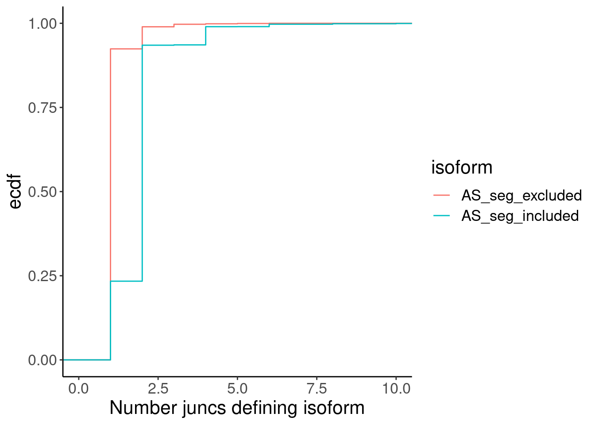

2024-07-08_CheckLeafcutter2_Classifications
2024-07-08
Last updated: 2024-07-10
Checks: 6 1
Knit directory:
2024_comparativesplicing/analysis/
This reproducible R Markdown analysis was created with workflowr (version 1.7.0). The Checks tab describes the reproducibility checks that were applied when the results were created. The Past versions tab lists the development history.
The R Markdown is untracked by Git. To know which version of the R
Markdown file created these results, you’ll want to first commit it to
the Git repo. If you’re still working on the analysis, you can ignore
this warning. When you’re finished, you can run
wflow_publish to commit the R Markdown file and build the
HTML.
Great job! The global environment was empty. Objects defined in the global environment can affect the analysis in your R Markdown file in unknown ways. For reproduciblity it’s best to always run the code in an empty environment.
The command set.seed(19900924) was run prior to running
the code in the R Markdown file. Setting a seed ensures that any results
that rely on randomness, e.g. subsampling or permutations, are
reproducible.
Great job! Recording the operating system, R version, and package versions is critical for reproducibility.
Nice! There were no cached chunks for this analysis, so you can be confident that you successfully produced the results during this run.
Great job! Using relative paths to the files within your workflowr project makes it easier to run your code on other machines.
Great! You are using Git for version control. Tracking code development and connecting the code version to the results is critical for reproducibility.
The results in this page were generated with repository version 5495e15. See the Past versions tab to see a history of the changes made to the R Markdown and HTML files.
Note that you need to be careful to ensure that all relevant files for
the analysis have been committed to Git prior to generating the results
(you can use wflow_publish or
wflow_git_commit). workflowr only checks the R Markdown
file, but you know if there are other scripts or data files that it
depends on. Below is the status of the Git repository when the results
were generated:
Ignored files:
Ignored: .Rhistory
Ignored: .Rproj.user/
Ignored: code/.snakemake/
Ignored: code/GenomeFiles/
Ignored: code/SJC_annotations_d5d1043c36aa60f014dee37e6f54418aeac524c63858131c0c68769dba597410.pckle
Ignored: code/Session.vim
Ignored: code/kaessmanAnalysis/
Ignored: code/kaessman_AS_dat/
Ignored: code/logs/
Ignored: code/rules/.GenomeAnnotations.smk.swp
Ignored: code/scratch/
Untracked files:
Untracked: analysis/2024-07-08_CheckLeafcutter2_Classifications.Rmd
Untracked: analysis/2024-07-09_Mazin_CheckNMD_Effects.Rmd
Untracked: code/scripts/LeafcutterJuncClassificationsToAS_segments.R
Unstaged changes:
Modified: analysis/2024-06-24_CheckAnnotationsOfOtherSpecies.Rmd
Modified: code/Snakefile
Modified: code/envs/bedparse.yml
Modified: code/rules/GenomeAnnotations.smk
Modified: code/scripts/AS_ExonSegments_to_AS_Junctions.py
Modified: code/scripts/leafcutter2
Note that any generated files, e.g. HTML, png, CSS, etc., are not included in this status report because it is ok for generated content to have uncommitted changes.
There are no past versions. Publish this analysis with
wflow_publish() to start tracking its development.
Intro
First, I took Mazin’s AS_segments and associated each with a pair of relevant junctions for the included/excluded isoform (cassette exons will actually have two junctions for the included isoform, and another junction for the excluded, so actually there is a trio of relevant junctions). I then used Yang’s scripts to classify whether these junctions are expected to be productive/unproductive… Now I want to check that these make sense. I can also compare to the results of NMDFinderB algorithm for each isoform (using annotated “protein_coding” transcript isoforms as a reference for the resulting isoform when AS_segment is included/excluded).
At first, I just did this for human:
cd ../code
python scripts/AS_ExonSegments_to_AS_Junctions.py -TsvOut kaessmanAnalysis/NMDFinderB_ASSegments/Human_ensemblv75.tsv.gz -JuncListOut kaessmanAnalysis/JuncListsForLeafcutter2/Human_ensemblv75.juncs.gz -AS_segmentsIn kaessman_AS_dat/AS_segment_lists/Human_ensemblv75.bed -AnnotatedTranscriptsIn GenomeFiles/Human_ensemblv75/Reannotated.B.bed.gz -fa /project2/yangili1/bjf79/ReferenceGenomes/Human_ensemblv75/Reference.fa -v &> NMDFinderB_EffectsOfMazinSegments/Human_ensemblv75.log
python scripts/leafcutter2/scripts/SpliceJunctionClassifier.py -c kaessmanAnalysis/JuncListsForLeafcutter2/Human_ensemblv75.juncs.gz -G /project2/yangili1/bjf79/ReferenceGenomes/Human_ensemblv75/Reference.fa -A GenomeFiles/Human_ensemblv75/Reannotated.B.gtf -v -r kaessmanAnalysis/JuncListsForLeafcutter2/ -o Human_ensemblv75.Now, let’s check the results…
library(tidyverse)
# Set theme
theme_set(
theme_classic() +
theme(text=element_text(size=16, family="Helvetica")))
# I use layer a lot, to rotate long x-axis labels
Rotate_x_labels <- theme(axis.text.x = element_text(angle = 45, vjust = 1, hjust=1))
JunctionsAnnotations <- read_tsv("../code/kaessmanAnalysis/JuncListsForLeafcutter2/Human_ensemblv75._junction_classifications.txt")
JunctionsAnnotations %>%
count(Annot, Coding, UTR)# A tibble: 6 × 4
Annot Coding UTR n
<lgl> <lgl> <lgl> <int>
1 FALSE FALSE FALSE 22293
2 FALSE FALSE TRUE 5028
3 FALSE TRUE FALSE 9074
4 TRUE FALSE FALSE 22335
5 TRUE FALSE TRUE 4665
6 TRUE TRUE FALSE 155819AS_segmentAnnotations <- read_tsv("../code/kaessmanAnalysis/NMDFinderB_ASSegments/Human_ensemblv75.tsv.gz")
AS_segmentAnnotations.tidy <- AS_segmentAnnotations %>%
filter(!is.na(WhichIsoformIsAnnotated)) %>%
distinct() %>%
# head(1000) %>%
separate_rows(LongIsoform_UniqueJuncs, ShortIsoform_UniqueJuncs, sep=",") %>%
pivot_longer(cols=LongIsoform_UniqueJuncs:ShortIsoform_NMDFinderB, names_pattern="^(.+?)_(.+)$", names_to = c("isoform", ".value"))
JoinedAnnotations <- AS_segmentAnnotations.tidy %>%
separate(UniqueJuncs, into=c("junc_chrom", "junc_start", "junc_end", "junc_strand"), sep="_", convert=T, remove=F) %>%
mutate(Intron_coord = str_glue("{junc_chrom}:{junc_start}-{junc_end+1}")) %>%
inner_join(JunctionsAnnotations)
JoinedAnnotations %>%
distinct(UniqueJuncs, .keep_all=T) %>%
distinct(AS_segment, isoform, .keep_all=T) %>%
mutate(Productive = Coding) %>%
count(Productive, NMDFinderB) %>%
group_by(NMDFinderB) %>%
mutate(Total = sum(n)) %>%
ungroup() %>%
mutate(NMDFinderB = str_glue("{NMDFinderB}; n={Total}")) %>%
ggplot(aes(x=NMDFinderB, y=n, fill=Productive)) +
geom_col(position='fill') +
Rotate_x_labels +
labs(y="fraction", x="NMDFinderB, tx with junction", fill="leafcutter2\nIsCoding", caption="NMDFinderB collapsed to first distinct reference isoform")Ok that makes sense…
Maybe I should think of a more sensible way to collapse things as from the original splicing quantifications based on AS_segments… For example, cassette exons will have two unique inclusion junctions, and it is possible their junction-level leafcutter2 classifications won’t agree. Since I want to use the exon-level quantifications from Mazin et al, it will be important to figure out how to do this… Maybe I should just see how often they don’t agree, and if it doesn’t happen much I’ll just filter out those ambiguous cases.
JoinedAnnotations %>%
distinct() %>%
distinct(UniqueJuncs, AS_segment, .keep_all=T) %>%
add_count(AS_segment) %>%
# filter(n==3)
distinct(AS_segment, .keep_all=T) %>%
ggplot(aes(x=n, color=color)) +
stat_ecdf() +
coord_cartesian(xlim=c(0,5))
JoinedAnnotations %>%
distinct(UniqueJuncs, AS_segment, .keep_all=T) %>%
add_count(AS_segment) %>%
filter((n == 3 & color=="#1b9e77") | (n==2 & color %in% c("#7570b3", "#e7298a"))) %>%
filter(isoform == "LongIsoform" & n ==3) %>%
dplyr::select(AS_segment, UniqueJuncs, Coding) %>%
group_by(AS_segment) %>%
mutate(rn = row_number()) %>%
ungroup() %>%
pivot_wider(names_from = "rn", values_from=c("Coding", "UniqueJuncs")) %>%
mutate(DoClassificationsMatch = Coding_1 == Coding_2) %>%
mutate(sum = Coding_1 + Coding_2) %>%
count(DoClassificationsMatch, sum)# A tibble: 3 × 3
DoClassificationsMatch sum n
<lgl> <int> <int>
1 FALSE 1 25
2 TRUE 0 2484
3 TRUE 2 9565Ok, so for this (subset) of cassette exons that straightforwardly map to a trio of junctions, for the long isoform, the annotations basically always match, and it is safe to just drop these edge cases.
I’m confused at those cases that don’t just map to a trio of junctions… Let’s try to understand what those are…
# Check that original AS_segment/transcript pairs all are defined by junction duos or trios
AS_segmentAnnotations.tidy %>%
distinct() %>%
count(transcript, AS_segment, color) %>%
ggplot(aes(x=n, color=color)) +
stat_ecdf()Ok that makes sense… I think there is some duplication when joining to leafcutter results… Could it be because introns are duplicated in leafcutter output?
AS_segmentAnnotations.tidy %>%
distinct() %>%
separate(UniqueJuncs, into=c("junc_chrom", "junc_start", "junc_end", "junc_strand"), sep="_", convert=T, remove=F) %>%
mutate(Intron_coord = str_glue("{junc_chrom}:{junc_start}-{junc_end+1}")) %>%
inner_join(JunctionsAnnotations) %>%
count(transcript, AS_segment, color) %>%
ggplot(aes(x=n, color=color)) +
stat_ecdf() +
coord_cartesian(xlim=c(0,5))
JunctionsAnnotations %>%
count(Intron_coord) %>%
ggplot(aes(x=n)) +
stat_ecdf() +
coord_cartesian(xlim=c(0,5))Ok, yes, some introns overlap more than one gene… Let’s collapse that, and then check…
AS_segmentAnnotations.tidy %>%
distinct() %>%
separate(UniqueJuncs, into=c("junc_chrom", "junc_start", "junc_end", "junc_strand"), sep="_", convert=T, remove=F) %>%
mutate(Intron_coord = str_glue("{junc_chrom}:{junc_start}-{junc_end+1}")) %>%
inner_join(
JunctionsAnnotations %>%
distinct(Intron_coord, .keep_all=T)
) %>%
count(transcript, AS_segment, color) %>%
ggplot(aes(x=n, color=color)) +
stat_ecdf() +
coord_cartesian(xlim=c(0,5))Ok, that makes sense. So each AS_segment:transcript pair is defined by exactly 2 unique juncs (for AS donor or AS acceptor) and 3 unique juncs (for cassette exon). But for some AS_segments, there will be more than one transcript, which complicates things. Let’s check how many transcripts for each AS_segment…
JoinedAnnotations %>%
distinct() %>%
count(transcript, AS_segment, color) %>%
ggplot(aes(x=n, color=color)) +
stat_ecdf() +
coord_cartesian(xlim=c(0,5))JoinedAnnotations %>%
count(transcript, AS_segment, color) %>%
ggplot(aes(x=n, color=color)) +
stat_ecdf() +
coord_cartesian(xlim=c(0,5))I think the pivot_longer somewhere is adding extra rows… but we can “distinct” the df…
JoinedAnnotations %>%
distinct() %>%
distinct(transcript, AS_segment) %>%
count(AS_segment) %>%
ggplot(aes(x=n)) +
stat_ecdf() +
coord_cartesian(xlim=c(0,5))So a lot of these AS_segments overlap multiple transcripts, and therefore have basically duplicated “unique” junctions rows… Let’s see how many of them are complicated with different junction sets between the transcripts…
JoinedAnnotations %>%
distinct() %>%
distinct(AS_segment, color, UniqueJuncs) %>%
count(AS_segment, color) %>%
ggplot(aes(x=n, color=color)) +
stat_ecdf() +
coord_cartesian(xlim=c(0,5))Ok I think this is the crux of the problem… This could arise from cassette exon that is nieghboring another cassette exon.
Luckily I took notes of some of these cases, and can easily filter out some of them…
JoinedAnnotations %>%
filter(is.na(Notes)) %>%
distinct() %>%
distinct(AS_segment, color, UniqueJuncs) %>%
count(AS_segment, color) %>%
ggplot(aes(x=n, color=color)) +
stat_ecdf() +
coord_cartesian(xlim=c(0,5))AS_segmentAnnotations %>%
filter(!is.na(WhichIsoformIsAnnotated)) %>%
count(Notes)# A tibble: 4 × 2
Notes n
<chr> <int>
1 AS at terminal exon 3195
2 Left ex is also AS segment 28282
3 Right ex is also AS segment 14088
4 <NA> 56862JoinedAnnotations %>%
distinct(UniqueJuncs, .keep_all=T) %>%
distinct(AS_segment, isoform, .keep_all=T) %>%
mutate(Productive = Coding) %>%
count(Productive, NMDFinderB, Notes) %>%
group_by(NMDFinderB, Notes) %>%
mutate(Total = sum(n)) %>%
ungroup() %>%
mutate(NMDFinderB = str_glue("{NMDFinderB}; n={Total}")) %>%
ggplot(aes(x=NMDFinderB, y=n, fill=Productive)) +
geom_col(position='fill') +
facet_wrap(~Notes, scales="free", nrow = 1) +
Rotate_x_labels +
theme(legend.position='bottom') +
labs(y="fraction", x="NMDFinderB, tx with junction", fill="leafcutter2\nIsCoding", caption="NMDFinderB collapsed to first distinct reference isoform")But even though I could easily filter out these odd cases, it’s not like these cases are more discordant with NMDFinderB. Are these AS_events defined by more than 2 or 3 splice junctions generally concordant with eachother?
JoinedAnnotations %>%
distinct() %>%
distinct(transcript, AS_segment, UniqueJuncs, .keep_all=T) %>%
group_by(isoform, AS_segment) %>%
summarise(PercentCoding = sum(Coding)/n(), n=n()) %>%
ungroup() %>%
mutate(isoform = recode(isoform, "LongIsoform"="AS_seg included", "ShortIsoform"="AS_seg excluded")) %>%
ggplot(aes(x=PercentCoding)) +
stat_ecdf() +
facet_wrap(~isoform) +
labs(y='ecdf', x='fraction juncs that are "coding" within AS_segment')JoinedAnnotations %>%
distinct() %>%
distinct(transcript, AS_segment, UniqueJuncs, .keep_all=T) %>%
group_by(isoform, AS_segment) %>%
summarise(PercentCoding = sum(Coding)/n(), n=n()) %>%
ungroup() %>%
mutate(n = case_when(
n > 12 ~ as.numeric(12),
TRUE ~ as.numeric(n)
)) %>%
add_count(n) %>%
mutate(group = str_glue("{n} juncs for segment; n={nn}")) %>%
mutate(isoform = recode(isoform, "LongIsoform"="AS_seg included", "ShortIsoform"="AS_seg excluded")) %>%
ggplot(aes(x=PercentCoding, color=group)) +
stat_ecdf() +
facet_wrap(~isoform) +
labs(y='ecdf', x='fraction juncs that are "coding" within AS_segment', color='num juncs in AS_seg:isoform pair')Ok, so for the most part, even when there are say 10 juncs for a the AS_segment included isoform, they mostly all agree in terms of coding capacity. I could reasonably just go with majority rules or say they all must match.
Let’s just calculate the fraction that are coding for each AS_segment:isoform pair and consider thresholds for that later…
So let’s prototype some code to go from the leafcutter junc classifications (which are defined as gene:junc pairs) to AS_segment:gene:isoform trios (where isoform refers to either being included or excluded) where each trio is summarised with a single number: the percent of associated junctions that are coding by leafcutter classification.
Final approach
Human
JunctionsAnnotations_final <- read_tsv("../code/kaessmanAnalysis/JuncListsForLeafcutter2/Human_ensemblv75._junction_classifications.txt")
AS_segmentAnnotations_final <- read_tsv("../code/kaessmanAnalysis/NMDFinderB_ASSegments/Human_ensemblv75.tsv.gz")
transcripts_to_genes_final <- read_tsv("../code/GenomeFiles/Human_ensemblv75/Reannotated.B.bed.gz", col_select = c(4, 13), col_names=F) %>%
dplyr::rename("transcript"="X4", "Gene_name"="X13") %>%
distinct()
AS_segmentAnnotations.tidy_final <- AS_segmentAnnotations_final %>%
filter(!is.na(WhichIsoformIsAnnotated)) %>%
distinct() %>%
separate_rows(LongIsoform_UniqueJuncs, ShortIsoform_UniqueJuncs, sep=",") %>%
pivot_longer(cols=LongIsoform_UniqueJuncs:ShortIsoform_NMDFinderB, names_pattern="^(.+?)_(.+)$", names_to = c("isoform", ".value")) %>%
distinct()
JoinedAnnotations_final <- AS_segmentAnnotations.tidy_final %>%
separate(UniqueJuncs, into=c("junc_chrom", "junc_start", "junc_end", "junc_strand"), sep="_", convert=T, remove=F) %>%
inner_join(transcripts_to_genes_final) %>%
mutate(Intron_coord = str_glue("{junc_chrom}:{junc_start}-{junc_end+1}")) %>%
inner_join(JunctionsAnnotations_final)
AS_segment_AnnotationsFromJuncs_final <- JoinedAnnotations_final %>%
group_by(isoform, AS_segment, Gene_name) %>%
summarise(PercentCoding = sum(Coding)/n(), n=n()) %>%
ungroup() %>%
mutate(isoform = recode(isoform, "LongIsoform"="AS_seg_included", "ShortIsoform"="AS_seg_excluded"))
AS_segment_AnnotationsFromJuncs_final %>%
ggplot(aes(x=n, color=isoform)) +
stat_ecdf() +
coord_cartesian(xlim=c(0,10)) +
labs(y='ecdf', x='Number juncs defining isoform')AS_segment_AnnotationsFromJuncs_final %>%
pivot_wider(names_from = "isoform", values_from = c("PercentCoding", "n"), names_sep=".") %>%
mutate(ChangeInCoding_InclusionToExclusion = PercentCoding.AS_seg_included - PercentCoding.AS_seg_excluded) %>%
ggplot(aes(x=ChangeInCoding_InclusionToExclusion)) +
stat_ecdf() +
scale_x_continuous(breaks=-1:1, labels=c("UnproductiveToProductive", "NoChange", "ProductiveToUnproductive")) +
labs(y='ecdf', x='Consequence of AS_segment inclusion') +
Rotate_x_labelsJoinedAnnotations_final %>%
distinct(UniqueJuncs, .keep_all=T) %>%
distinct(AS_segment, isoform, .keep_all=T) %>%
mutate(Productive = Coding) %>%
count(Productive, NMDFinderB) %>%
group_by(NMDFinderB) %>%
mutate(Total = sum(n)) %>%
ungroup() %>%
mutate(NMDFinderB = str_glue("{NMDFinderB}; n={Total}")) %>%
ggplot(aes(x=NMDFinderB, y=n, fill=Productive)) +
geom_col(position='fill') +
Rotate_x_labels +
labs(y="fraction", x="NMDFinderB, tx with junction", fill="leafcutter2\nIsCoding", caption="NMDFinderB collapsed to first distinct reference isoform")Ok, that all makes sense… Let’s write this code to a script and repeat on the other species… Then I can start to look at how changes in splicing of these UnproductiveToProductive or ProductiveToProductive AS_segments correlate with changes in expression.
Before I do that… I want to repeat just a few of these analyses with a less well annotated genome… Like chicken…
Chicken
JunctionsAnnotations_final_chicken <- read_tsv("../code/kaessmanAnalysis/JuncListsForLeafcutter2/Chicken_ensemblv84._junction_classifications.txt")
AS_segmentAnnotations_final_chicken <- read_tsv("../code/kaessmanAnalysis/NMDFinderB_ASSegments/Chicken_ensemblv84.tsv.gz")
transcripts_to_genes_final_chicken <- read_tsv("../code/GenomeFiles/Chicken_ensemblv84/Reannotated.B.bed.gz", col_select = c(4, 13), col_names=F) %>%
dplyr::rename("transcript"="X4", "Gene_name"="X13") %>%
distinct()
AS_segmentAnnotations.tidy_final_chicken <- AS_segmentAnnotations_final_chicken %>%
filter(!is.na(WhichIsoformIsAnnotated)) %>%
distinct() %>%
separate_rows(LongIsoform_UniqueJuncs, ShortIsoform_UniqueJuncs, sep=",") %>%
pivot_longer(cols=LongIsoform_UniqueJuncs:ShortIsoform_NMDFinderB, names_pattern="^(.+?)_(.+)$", names_to = c("isoform", ".value")) %>%
distinct()
JoinedAnnotations_final_chicken <- AS_segmentAnnotations.tidy_final_chicken %>%
separate(UniqueJuncs, into=c("junc_chrom", "junc_start", "junc_end", "junc_strand"), sep="_", convert=T, remove=F) %>%
inner_join(transcripts_to_genes_final_chicken) %>%
mutate(Intron_coord = str_glue("{junc_chrom}:{junc_start}-{junc_end+1}")) %>%
inner_join(JunctionsAnnotations_final_chicken)
AS_segment_AnnotationsFromJuncs_final_chicken <- JoinedAnnotations_final_chicken %>%
group_by(isoform, AS_segment, Gene_name) %>%
summarise(PercentCoding = sum(Coding)/n(), n=n()) %>%
ungroup() %>%
mutate(isoform = recode(isoform, "LongIsoform"="AS_seg_included", "ShortIsoform"="AS_seg_excluded"))
AS_segment_AnnotationsFromJuncs_final_chicken %>%
ggplot(aes(x=n, color=isoform)) +
stat_ecdf() +
coord_cartesian(xlim=c(0,10)) +
labs(y='ecdf', x='Number juncs defining isoform')
AS_segment_AnnotationsFromJuncs_final_chicken %>%
pivot_wider(names_from = "isoform", values_from = c("PercentCoding", "n"), names_sep=".") %>%
mutate(ChangeInCoding_InclusionToExclusion = PercentCoding.AS_seg_included - PercentCoding.AS_seg_excluded) %>%
ggplot(aes(x=ChangeInCoding_InclusionToExclusion)) +
stat_ecdf() +
scale_x_continuous(breaks=-1:1, labels=c("UnproductiveToProductive", "NoChange", "ProductiveToUnproductive")) +
labs(y='ecdf', x='Consequence of AS_segment inclusion') +
Rotate_x_labelsJoinedAnnotations_final_chicken %>%
distinct(UniqueJuncs, .keep_all=T) %>%
distinct(AS_segment, isoform, .keep_all=T) %>%
mutate(Productive = Coding) %>%
count(Productive, NMDFinderB) %>%
group_by(NMDFinderB) %>%
mutate(Total = sum(n)) %>%
ungroup() %>%
mutate(NMDFinderB = str_glue("{NMDFinderB}; n={Total}")) %>%
ggplot(aes(x=NMDFinderB, y=n, fill=Productive)) +
geom_col(position='fill') +
Rotate_x_labels +
labs(y="fraction", x="NMDFinderB, tx with junction", fill="leafcutter2\nIsCoding", caption="NMDFinderB collapsed to first distinct reference isoform")
Ok all looks good. In chicken as well as human, the leafcutter2 JunctionClassifier.py script seems to work as intended and is similarly concordant with results of NMDFinderB translating isoforms with or without Mazin’s AS_segments.
sessionInfo()R version 4.2.0 (2022-04-22)
Platform: x86_64-pc-linux-gnu (64-bit)
Running under: CentOS Linux 7 (Core)
Matrix products: default
BLAS/LAPACK: /software/openblas-0.3.13-el7-x86_64/lib/libopenblas_haswellp-r0.3.13.so
locale:
[1] LC_CTYPE=en_US.UTF-8 LC_NUMERIC=C LC_TIME=C
[4] LC_COLLATE=C LC_MONETARY=C LC_MESSAGES=C
[7] LC_PAPER=C LC_NAME=C LC_ADDRESS=C
[10] LC_TELEPHONE=C LC_MEASUREMENT=C LC_IDENTIFICATION=C
attached base packages:
[1] stats graphics grDevices utils datasets methods base
other attached packages:
[1] forcats_0.5.1 stringr_1.4.0 dplyr_1.0.9 purrr_0.3.4
[5] readr_2.1.2 tidyr_1.2.0 tibble_3.1.7 ggplot2_3.3.6
[9] tidyverse_1.3.1
loaded via a namespace (and not attached):
[1] Rcpp_1.0.12 lubridate_1.8.0 assertthat_0.2.1 rprojroot_2.0.3
[5] digest_0.6.29 utf8_1.2.2 R6_2.5.1 cellranger_1.1.0
[9] backports_1.4.1 reprex_2.0.1 evaluate_0.15 highr_0.9
[13] httr_1.4.3 pillar_1.7.0 rlang_1.0.2 readxl_1.4.0
[17] rstudioapi_0.13 jquerylib_0.1.4 rmarkdown_2.14 labeling_0.4.2
[21] bit_4.0.4 munsell_0.5.0 broom_0.8.0 compiler_4.2.0
[25] httpuv_1.6.5 modelr_0.1.8 xfun_0.30 pkgconfig_2.0.3
[29] htmltools_0.5.2 tidyselect_1.1.2 workflowr_1.7.0 fansi_1.0.3
[33] crayon_1.5.1 tzdb_0.3.0 dbplyr_2.1.1 withr_2.5.0
[37] later_1.3.0 grid_4.2.0 jsonlite_1.8.0 gtable_0.3.0
[41] lifecycle_1.0.1 DBI_1.1.2 git2r_0.30.1 magrittr_2.0.3
[45] scales_1.3.0 cli_3.6.2 stringi_1.7.6 vroom_1.5.7
[49] farver_2.1.0 fs_1.5.2 promises_1.2.0.1 xml2_1.3.3
[53] bslib_0.3.1 ellipsis_0.3.2 generics_0.1.2 vctrs_0.4.1
[57] tools_4.2.0 bit64_4.0.5 glue_1.6.2 hms_1.1.1
[61] parallel_4.2.0 fastmap_1.1.0 yaml_2.3.5 colorspace_2.0-3
[65] rvest_1.0.2 knitr_1.39 haven_2.5.0 sass_0.4.1